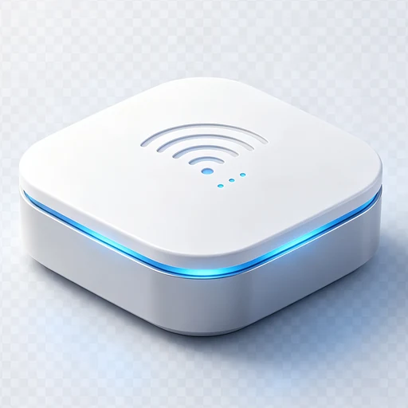

01
硬件角色先固定：网关、节点、门铃三条线分开
网关负责 Wi-Fi、MQTT 和 Mesh 转发；灯控节点负责执行灯效；门铃保持独立网络链路，不进入 Mesh。 这样做的好处是故障定位清晰：门铃视频卡顿不会影响 Mesh 灯控，Mesh 组网问题也不会破坏门铃配网和页面。
ESP32-S3 节点：GPIO48 WS2812 · 当前实测 COM14 可烧录
一个面向真实硬件闭环的设备联网系统：ESP32-S3 可视门铃、BLE Mesh 网关与灯控节点、 Flutter 跨端 App、FastAPI 云端设备影子、MQTT 消息总线和灰度 OTA 升级统一在同一套协议下工作。
说明：LightMesh 灯联网是个人开源项目代号，不是公司主体名称，也不作为商业售卖品牌使用。
 智能门铃
离线
智能门铃
离线

Mesh 网关 离线LightMesh 灯联网把“设备发现、配网、控制、状态回传、云端影子、OTA 升级、App 页面”串成闭环。 后续如果新增门铃、网关、灯带、插座、传感器，不需要重新设计整套通信流程，只需要补产品能力和页面表现。
以统一协议固定设备接入方式，让后续门铃、网关、灯、传感器等新产品复用同一套 App、云端、OTA 和设备影子能力。
ESP32-S3 门铃、RGB 灯、Mesh 网关与节点统一上报设备身份、能力、在线状态和版本信息。
固定 farmely.v1 MQTT 信封：topic、msg_id、capabilities、status、cmd、ota 全部标准化。
FastAPI + SQLite + MQTT bridge 维护设备影子、账号认领、自动化、固件仓库和灰度 rollout。
Flutter App 负责配网、设备页、门铃视频、灯控、OTA 检查，也可继续扩展 Web 端运行。
farmely/{class}/{device_id}/{direction}/{channel}
后续新增产品只扩展 class、device_type、capabilities 和 data 字段，不再临时创造接口。
这一部分按真实开发顺序展开：先让板子稳定入网，再处理消息收发、任务划分、回调事件和 Bug 收敛。
网关负责 Wi-Fi、MQTT 和 Mesh 转发；灯控节点负责执行灯效；门铃保持独立网络链路，不进入 Mesh。 这样做的好处是故障定位清晰：门铃视频卡顿不会影响 Mesh 灯控，Mesh 组网问题也不会破坏门铃配网和页面。
固件注册 Mesh 事件回调后，根据 connected、disconnected、layer change、routing table change 等事件更新自身层级、root 状态和路由表。 root 产生后才启动 MQTT 桥接；普通节点拿到 root 地址后向上游周期性上报状态。
mesh_event_handler()
├─ MESH_EVENT_STARTED：读取 mesh_id / layer
├─ MESH_EVENT_CONNECTED：记录父节点，root 启动 MQTT
├─ MESH_EVENT_ROOT_ADDRESS：节点保存 root 地址
└─ MESH_EVENT_LAYER_CHANGE：刷新灯效颜色与状态FreeRTOS 里拆出 `MPTX` 和 `MPRX` 两个任务：发送任务做状态上报和周期维护，接收任务阻塞等待 Mesh 数据。 回调函数只更新连接状态，不在事件回调里下载 OTA 或做复杂 JSON 处理，避免阻塞系统事件循环。
xTaskCreate(esp_mesh_p2p_tx_main, "MPTX", 3072, NULL, 5, NULL);
xTaskCreate(esp_mesh_p2p_rx_main, "MPRX", 3072, NULL, 5, NULL);节点不上云，不直接持有 MQTT 连接。节点把状态通过 Mesh P2P 发给 root，root 维护节点表，再发布到 `farmely/light/<id>/up/status`。控制方向相反：App → MQTT → root → Mesh node。
Node status → esp_mesh_send(root, MESH_DATA_P2P)
Root table → root_publish_node_status()
Cloud/App → farmely/light/{id}/down/cmd网关收到 `farmely/gateway/<id>/down/ota` 后直接执行 OTA；灯控节点收到的是 `farmely/light/<id>/down/ota`，root 解析目标设备后把 url、sha256、fw_version 和 msg_id 封装为 Mesh OTA 命令转发给节点。
handle_mqtt_ota_command()
├─ gateway OTA → mesh_ota_start()
└─ light OTA → mesh_forward_ota_request()这部分不是包装后的“功能清单”，而是实际联调时会遇到的问题：串口识别、target 错刷、任务并发、分区大小、OTA 校验。
COM14 最初按 ESP32 节点烧录失败，esptool 明确提示实际芯片是 ESP32-S3。处理方式是先读芯片型号，再用 `set-target esp32s3` 重新生成构建目录。
节点加入 OTA 和 MQTT 身份字段后，默认 1MB app 分区不够。临时测试使用 large app 分区，真正产品 OTA 需要按 flash 容量设计双 OTA 分区。
灯效可能被 Mesh 事件任务、接收任务、MQTT 控制路径同时调用，因此 WS2812 输出需要串行化，避免 RMT 驱动被并发访问导致灯态异常。
`ESP_ERR_HTTPS_OTA_IN_PROGRESS` 不是失败，而是下载仍在继续。升级循环必须把它当成正常进行态，否则会误判 OTA 失败。
账号登录、设备列表、云端详情页、灯控、门铃视频入口、BLE/SoftAP 配网和 OTA 检查入口。
OV3660 摄像头、IO0 门铃事件、MQTT 信令、本地/中继 MJPEG 视频链路已形成闭环。
ESP-WIFI-MESH/BLE Mesh 网关与节点控制链路，支持节点状态聚合和 App 控制。
固件仓库、灰度 rollout、MQTT 下发、设备进度回报，RGB 灯已从 v1.0.0 实机升级到 v1.1.0。
点进项目先看到产品介绍、下载入口和演示能力；继续往下才是工程细节、调试记录和教程内容。后续新增产品也按这个结构扩展。
面向访客：一句话说明项目价值、当前能演示什么、APK/源码在哪里、适合什么场景。
面向开发者：固件目录、通信协议、Mesh 组网、线程划分、回调函数、BUG 处理和烧录命令。
下一步重点是双 OTA 分区、签名校验、门铃 OTA 实测、Mesh 分发稳定性和更完整的 App 设备页体验。